从零开始的Obspy
参考
读取地震数据
访问元信息
from obspy import read
waves = read('/home/zhiyuanshi/Documents/Pythonworks/IU_ADK_10.mseed')
print(waves) # 输出波形名称
输出：
1 | IU.ADK.10.BH1 | 2014-10-28T00:00:00.019500Z - 2014-10-28T23:59:59.994500Z | 40.0 Hz, 3456000 samples |
print(len(waves)) # waves中含有15个波形
1 | 15 |
输出最前面的波形名称
tra1 = waves[0]
print(tra1) # 输出最前面的波形名称
1 | IU.ADK.10.BH1 | 2014-10-28T00:00:00.019500Z - 2014-10-28T23:59:59.994500Z | 40.0 Hz, 3456000 samples |
输出元信息，即地震数据的台站信息等:
print(tra1.stats) # 输出元信息，即地震数据的台站信息等
1 | network: IU |
print(tra1.stats.station)
1 | ADK |
访问波形数据
使用data关键词对实际波形数据进行检索
print(tra1.data)
1 | [-4017 -3853 -3594 ... 1167 807 1231] |
print(len(tra1.data))
1 | 3456000 # 与上面的波形中npts相对应 |
tra1.plot() # 浏览数据
波形绘制
读取数据
from obspy.core import read
# 读取一个数据
signalchannel = read('/home/zhiyuanshi/Documents/Pythonworks/IU_ADK_10_B03.sac')
# 读取三个数据
threechannels = read('/home/zhiyuanshi/Documents/Pythonworks/IU_ADK_10_B01.sac')
threechannels += read('/home/zhiyuanshi/Documents/Pythonworks/IU_ADK_10_B02.sac')
threechannels += read('/home/zhiyuanshi/Documents/Pythonworks/IU_ADK_10_B03.sac')
print(signalchannel)
1 | 1 Trace(s) in Stream: |
print("\n")
print(threechannels)
1 | 3 Trace(s) in Stream: |
基本绘制与保存
signalchannel.plot() # 基本绘制，默认大小800*250，可以通过size属性调整.
size属性使用方法：size=(1920,1080)
signalsstarttime = signalchannel[0].stats.starttime
signalchannel.plot(outfile='signalchannelred.png', color='red', number_of_ticks=7, tick_rotation=5, tick_format='%I:%M %p',starttime = signalsstarttime+60*60, endtime=signalsstarttime+60*60+120)
signalchannel.plot(outfile='signalchannel.png') # 保存波形文件

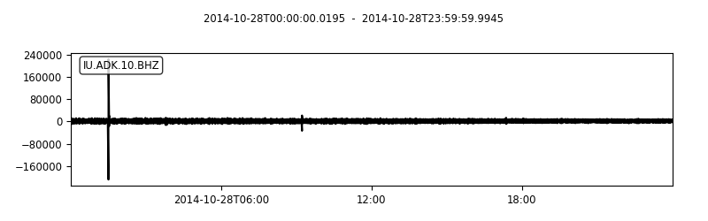
绘制多通道波形
threechannels.plot(outfile='threechannels1920_1080.png', size=(1920,1080))

绘制一天的trace图像，one-day图像
signalchannel.plot(outfile='signalchannel_oneday.png', size = (3400,1440), type='dayplot')
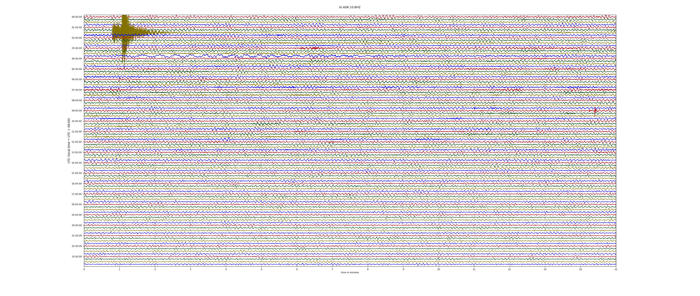
signalchannel.filter('lowpass', freq=0.1, corners=2)
signalchannel.plot(outfile='signalchannel_oneday_filter',
type='dayplot', interval=60, right_vertical_labels=False,
vertical_scaling_range=5e3, one_tick_per_line=True,
color=['k', 'r', 'b', 'g'], show_y_UTC_label=False,
events={'min_magnitude': 6.5}, size=(3400, 1440))

绘制一段记录 (未完成，需要定义单位或者地理位置)
threechannels.plot(outfile='section_threechannels', type='section')
使用matplotlib自定义绘图
- 疑问：signalchannel 需要取read到的内容的[0]项，具体未知为何如此。
1
2
3
4
5
6
7import matplotlib.pyplot as plt
fig = plt.figure() # 创建一个画布
ax = fig.add_subplot(1, 1, 1) # 创建组合图，如subplot()
ax.plot(signalchannel[0].times("matplotlib"), signalchannel[0].data, 'b-')
ax.xaxis_date()
fig.autofmt_xdate()
plt.show()
滤波
1 | import numpy as np |
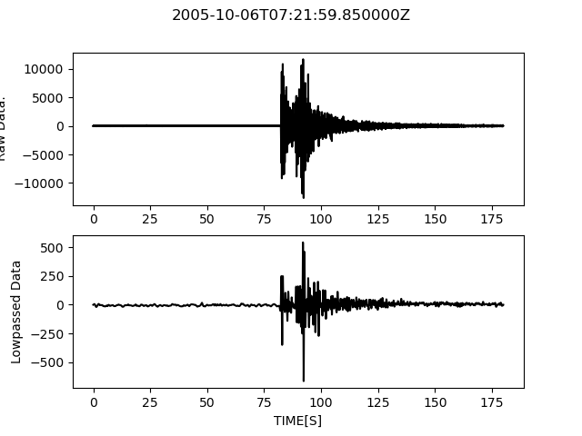
采用低通滤波，波形变得稀疏了。滤除了高频成分，其中高频成分大多数可能是噪音。
下采样
1 | tr_new = tr.copy() |
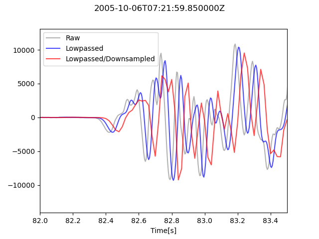
未了解下采样为何，从图像上感觉相位变化了？
合并
合并绘制三个重叠的地震图。即这三个数据时间是重合的，而且是同一组数据。将其合并后时间最长的是最终结果。
1 | st = obspy.read("https://examples.obspy.org/dis.G.SCZ.__.BHE") |
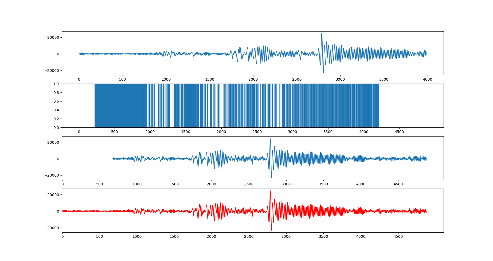
第二个图的波形有些奇怪。震级饱和现象有些相似，但是它的振幅最大是1，其他的是20000，总之有些奇怪。
其它图像看起来很正常，最后一个图像时间轴填满了，看得出来是1、3图片的结合。合并就是将不同记录时间的同一地震波形合并为一个总的时间的地震波形，简而言之是时间上的合并。
FK分析
直角坐标
1 | import matplotlib.pyplot as plt |
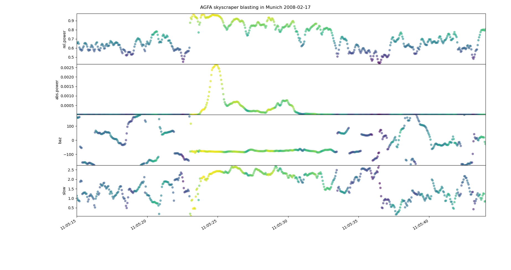
极坐标
1 | import numpy as np |
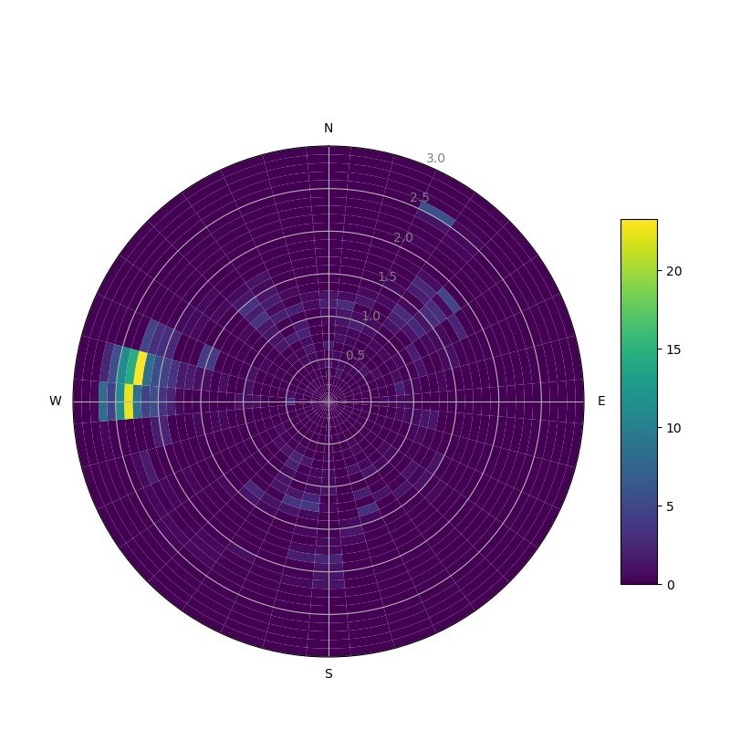
信号包络 seismogram envelopes
滤波与包络信号绘制图像
1 | import numpy as np |
红色是原始波形的绘制图像，经过1-3HZ带通滤波后，波形包络和波形呈现如黑色曲线所示。
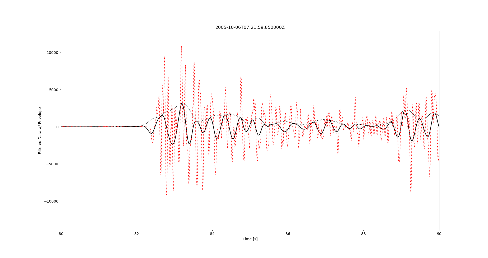
绘制频谱 plotting spectrograms
1 | import obspy |
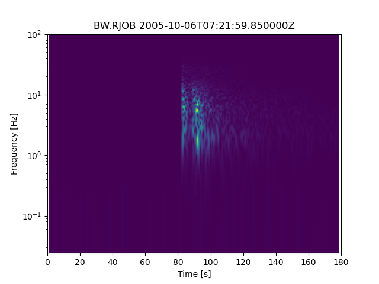
零极点和频率响应 poles and zeros Frequency response
计算LE-3D/1S地震仪的频率响应
1 | import numpy as np |
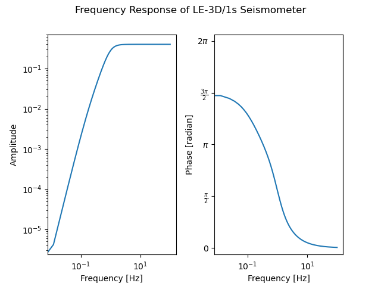
绘制沙滩球 Beachball
1 | from obspy.imaging.beachball import beachball |
但是这个球的参数mt，目前不知道是什么含义。其中红色沙滩球为转换断层机制解。
mt可能是moment tensor？即地震矩张量。
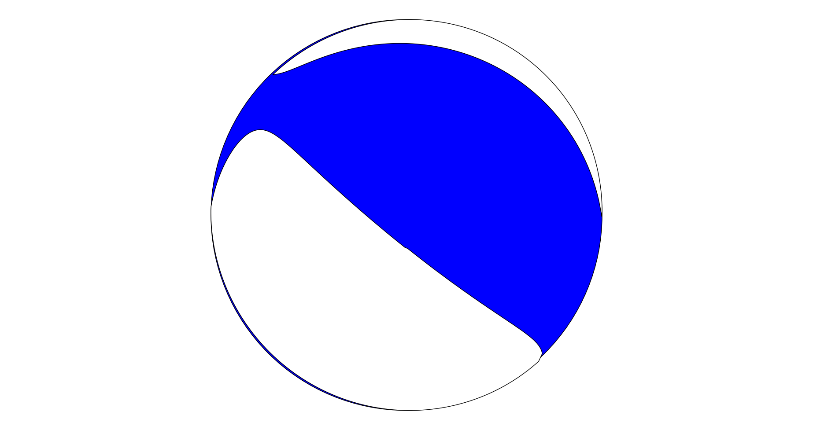
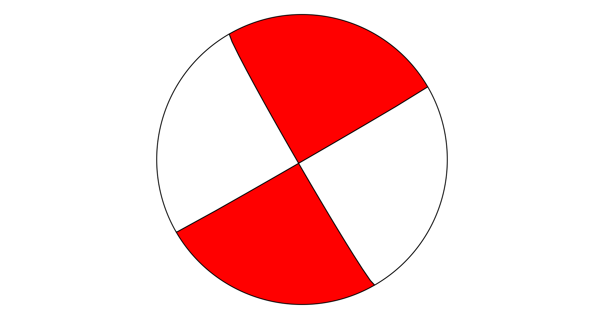
basemap plots 地图绘制
自定义投影的basemap plot
通过Inventory.plot() Catalog.plot()内置方法执行
在使用过程中出现mpl_toolkits.basemap 不能调用的情况。在命令行中输入：
pip install pyproj -i https://pypi.tuna.tsinghua.edu.cn/simple
出现不能调用的情况，需要安装basemap库。安装包源码：https://github.com/matplotlib/basemap
- windows：
https://www.lfd.uci.edu/~gohlke/pythonlibs/#basemap 在此处下载basemap然后pip安装。
下载后安装即可。 - linux :
1
2
3python -m pip install basemap-data
python -m pip install basemap-data-hires
python -m pip install basemap
1 | from mpl_toolkits.basemap import Basemap |
这些代码绘制出来的图像是三个独立的图像，并没有绘制在一起。可能是BUG？
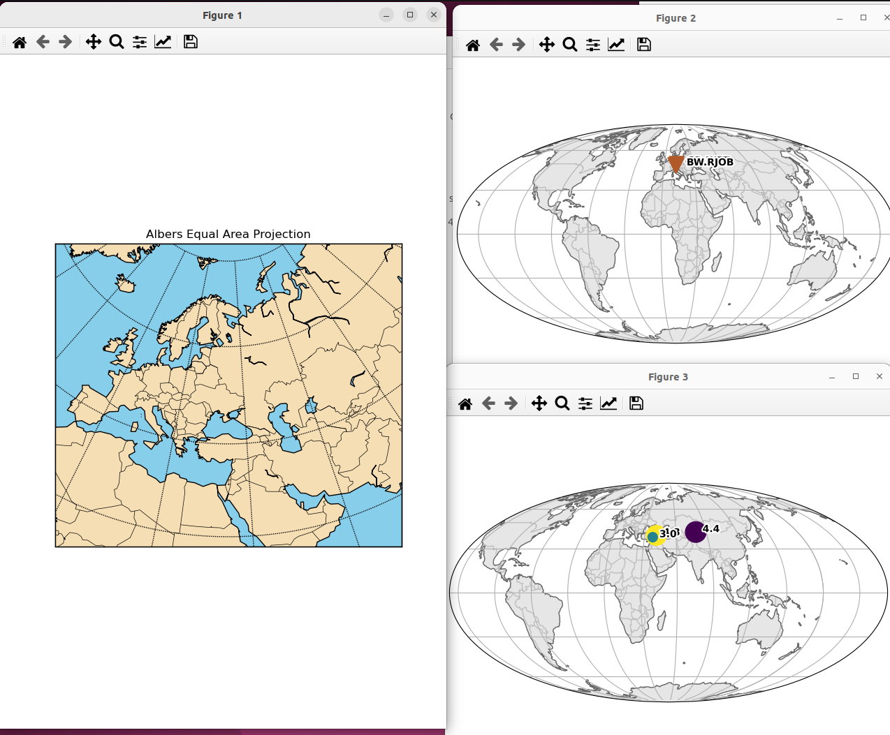
确定地点的带有Beachball的basemap plot
1 | import gzip |
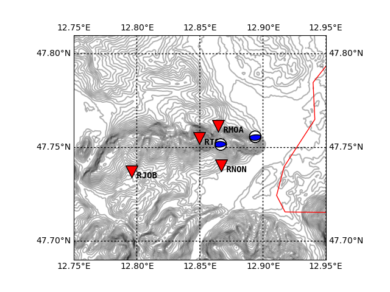
带有beachball的全球Basemap
1 | import numpy as np |
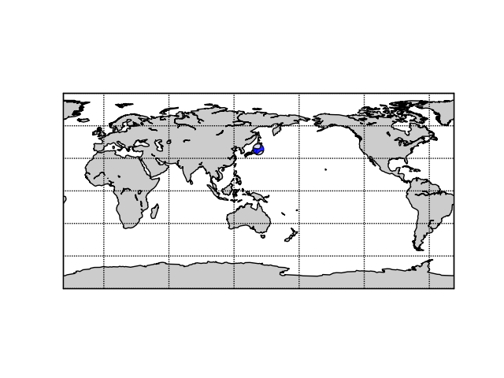
走时和射线路径绘制
走时
绘制给定距离和相位的使用iasp91速度模型计算出的走时
1 | from obspy.taup import plot_travel_times |
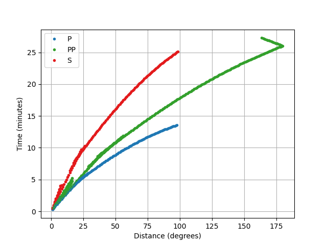
笛卡尔射线路径
笛卡尔射线路径指直角坐标系下的二维射线路径。
1 | from obspy.taup import TauPyModel |
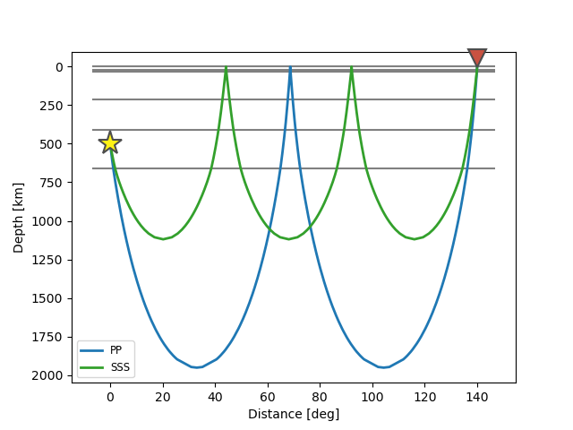
球形射线路径
使用plot_rays()方法，绘制参数为spherical。
1 | from obspy.taup.tau import Arrivals |
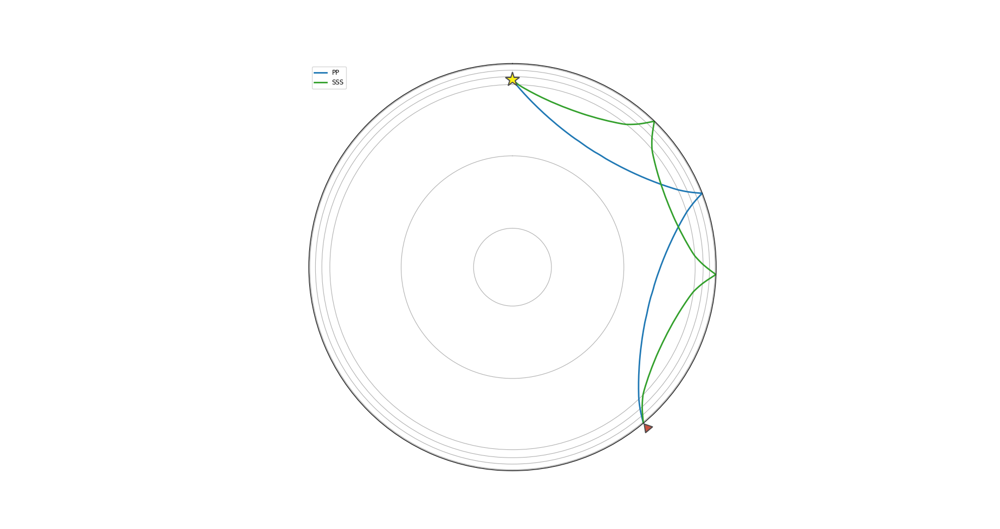
多距离射线路径
能够绘制多个震中距台站的射线路径。
1 | from obspy.taup.tau import plot_ray_paths |
- npoints: Number of receivers to plot, 但是在图中看不出来含义。
高级示例
绘制了更多震相和台站的射线路径。
1 | import numpy as np |
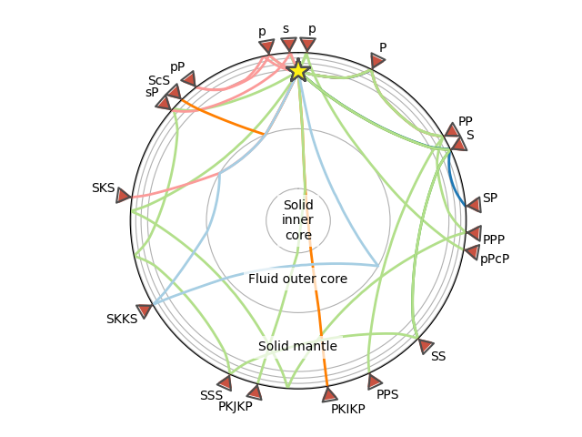